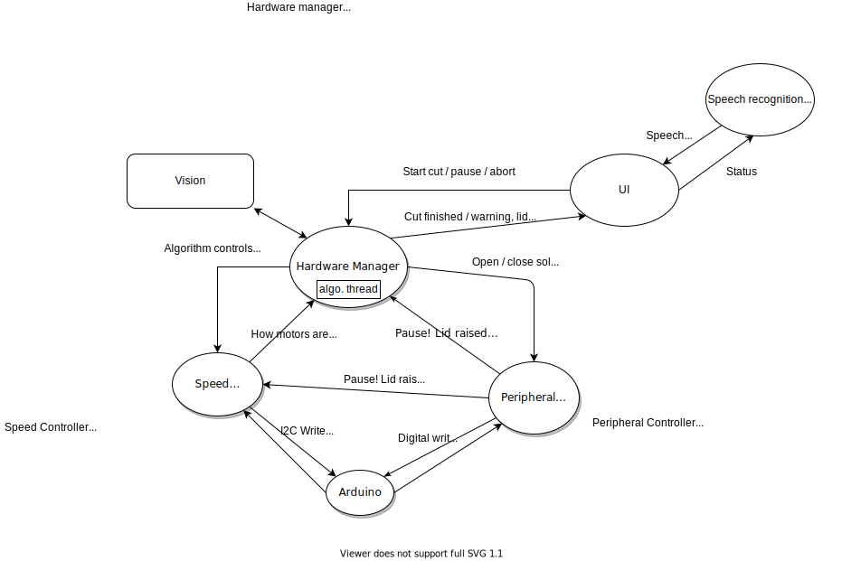

How it works
SousChef is the reflection of a long and deliberate design journey that led to the creation of a user-friendly and efficient product. The team’s design process involved careful consideration of every feature and how each part would work in conjunction with the rest. We carefully considered many ideas, some of which even got lost throughout the creative process in favour of more practical approaches. SousChef can be broken into three areas of functionality: the cutting mechanism, the user interface and the computer vision.
Mechanics
The cutting mechanism of our product consists of three motorised components that are controlled by a central Arduino board. The Arduino was chosen early on for its versatility with respect to the growing demands of our firmware. It allows for a custom communication protocol to talk to the Raspberry Pi, boots up quickly and is small giving more flexibility to the construction. The cutting itself consists of a vertical mechanism that performs the cuts, a moving cutting board that positions the vegetable for each cut and a holding mechanism that keeps the vegetable steady and upright for each cut. The cutting mechanism uses two linear actuators driven by a single motor. The cutting board uses the same rack and pinion type linear actuator mechanism that the cutting mechanism uses with the addition of a gearing reduction for increased stability. Finally, the holding mechanism is a ‘mousetrap’ like mechanism where a motor drives lego arms that hold a silicon roller in an arc around the food from the back of the frame. A force is applied to the food by powering the motor ensuring the food remains firmly in place.
The motor has a built-in rotary encoder, which is used for calibration on startup, to measure the lengths of our cuts, and to limit the extension of the arm within the range it can physically travel.
The firmware to control the motors was developed experimentally with particular focus on reliability and accuracy. The speed of the motors is accurately controlled by modulating the power applied through a feedback loop that reads the rotary encoders, and the speed is used to control the distance moved. The reliability of the cuts stems from the calibration algorithm which takes into account the effective elasticity of the motion due to back EMF. The accuracy in the board motion comes from a high gear reduction which magnifies the resolution of the rotary encoders.
Initially the Arduino ran all the algorithms but eventually the logic was moved to the more powerful Pi allowing for multi-threaded operation such as pausing the current action, whilst the Arduino became a USB I2C interface to forward messages from the Pi to the motors and vice versa. The Arduino was kept to decouple the high power electronics from the Pi and to free up the pins on the Pi to connect to the touch screen.
Computer Vision
In order to know how much we need to move the board for the correct cuts to be made, we had to come up with a robust solution to find the size and the position on the cutting board of the food. We decided on using a web camera for this so we can approximate the measurements using object detection. The software is written in Java and it uses the OpenCV library for image processing.
The algorithm works by capturing one frame when the command is given by the main actor and stores it as an RGB image. It turns the frame into a grayscale image, applies some pre-processing routines such as a Gaussian blur to eliminate some of the noise and proceeds to detect all the edges in the frame by using a Canny Edge Detector (a pixel is considered to be part of the edge if it has a high-frequency or a steep change of intensity). This way, we don't rely on any specific attributes of the items we looking for, but only on the difference of the ability to reflect light with different intensities between the cutting board and the item. After detecting the boundaries, a series of morphological operations are applied (Erode and Dilate) to fill any gaps in the detected contours. The algorithm will then iterate through all the detected contours and will consider the biggest one to be our desired object (considering the rest to be shadows, specularities or fragments from other ingredients) and it will then calculate the rotated rectangle with the minimum area that bounds the contour. We then use the internal specifications of the camera (sensor size, focal length, resolution, ...) and external (such as the distance to the object) to calculate the size of the object using the similar triangles rule and the apparent size of the object on the frame (measured in pixels).
Because the device will always start cutting from the same initial position, we were able to use the apparent distance in the frame from the edge of the object to the cutting position to calculate the real-world distance with the same similar triangles rule and estimate how much we need to move the cutting board initially so we can begin cutting.
Voice Control
The voice commands work by using a speech to text software called CMU Sphinx in conjunction with a modified python program called SpeechRecognition which allows us to manipulate the CMU Sphinx, a python text to speech program called pyttsx3, and a hot word detection service called SnowBoy. We use a HTTP protocol to communicate between the Java and Python parts of the program. We modified the SpeechRecognition program to be a class with 3 methods, one for converting the speech to text, one for asking for confirmation, and one for stopping the device. We uploaded the software to the raspberry pi on the robot which allowed our speech recognition to work without reliance of an external system. The CMU Sphinx software works without an internet connection and does not store speech recordings so there are no privacy issues.
Initially, when the robot powers on, the speech recognition will simply listen through the microphone on the camera used for the vision component. Nothing will be translated until the wake word 'Hey Chef' is heard. SnowBoy is used for this; the site allows us to download a model of the wake word which can even be refined by members of the public adding their own voice samples. Once the wake word is heard, a 'ding' sound will play to indicate detection, and it will listen to what the user has said then convert it to a string. Then the string is searched for 1) a number, and 2) a word which is at least synonymous with either 'slice' or 'piece'. The difference is that a for "slice", the number is interpreted as the millimetre intervals to cut at, and for "piece" the number is interpreted as how many parts the item is to be cut into. Necessarily this means that there are boundaries on the numbers which are valid.
If the speech is indecipherable, or one of these items are not found, then the program says 'Sorry I didn't catch that. Please try again' and will wait for the wake word again. In the event that all previous conditions are met, the program will say 'I think you asked for {number}(millimetre if slices){slices/pieces}. Is this correct?' which is prompting the user to respond with either 'Yes' or 'No' and opens the microphone to listen for these without the need for a 'Hey Chef' again. If the user has responded 'No' then the program says 'OK, please try again' and the process starts again. If the user has responded 'Yes' then the cut configuration is returned to the Java component which then takes control of starting the other processes.
At any point, if the user has uttered the word 'Stop' in the string, the speech recognition will break away and lose any progress up to that point. Once the cutting process has started, a method is called from the Java side which opens the microphone again. This is so that the user can say the wake word as usual and 'Stop' to pause the cutting process, providing a way to stop the machine from perhaps across the room. The user can resume by saying say "Hey Chef, start" or to cancel the process completely say "Hey Chef, end".
User Interface
We used JavaFX to build our UI and Maven to build and manage the JavaFX project.
The reasons why we use JavaFX are:
- JavaFX uses FXML, a markup language based on XML, to manage the controls on the page. JavaFX also has a visual editor called “Scene Builder” which can modify the FXML file without coding. These features make us design UI efficiently.
- JavaFX supports CSS, which can let us customize controls to make UI prettier.
- JavaFX has richer components compared to Swing and is expected to grow in the future, which allows us to continually update UI.
Our UI has 11 pages, each page has an FXML file and a page controller class. The properties and layouts of controls are defined in the FXML file. The functions of interactive controls are defined in the controller class. The effects of all buttons are defined in the same CSS file in order to make the UI looks neatly.
In order to make our UI run on the Raspberry Pi, we use Maven to export the Java project to a JAR file. The benefit of using Maven is that we do not need to install any external libraries other than Java 11 in the Pi as they are already included in the JAR file by Maven build. Also, Maven is easy to manage and update dependencies, if a future update needs some other dependencies, we can add them quickly.
Component Integration
So far we've covered the inner workings of several parts of the system, but how are they all integrated together?
At the heart of the SousChef is an actor system run on the Raspberry Pi. This actor system allows the many components of SousChef to send messages between each other asynchronously. This is important because actions like interrupting the cut in case the lid gets opened must be processed immediately. Here is a diagram showing all the actors and how they are connected:

Here are some low-level notes:
- The Raspberry Pi sends messages to the Arduino that translate directly to I2C messages forwarded to the Motor board connected to the Arduino. This approach was chosen because it meant that all algorithms and logic can be written in Java and utilize multi-threading, which the Arduino cannot.
- The vision code is written in Java, so it is invoked by simply calling plain Java methods.
- The speech processing lives in its own Python program, that has an HTTP web server (exposed only locally) which is used for the Java program to communicate with it.